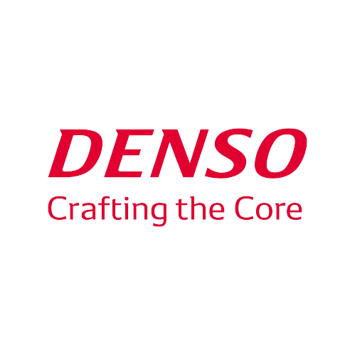

Customer & Service Manager
Takeoff Luxury Toys (Takeoff Barcelona)
2020-2022
- Responsible for decision making in the customer and technical service area.
- Managed purchasing, ordering, and implementation of stock systems for sales products and spare parts warehouses.
- Created and managed preventive maintenance protocols for company and customer products.
- Implemented open-source management programs and dealt with distributors and customers, solving problems and building relationships.
- Managed a team of employees to achieve company objectives.
- Grow and learn together with the company and expand the business to new locations (around Spain).

Electronic Maintenance Technician
Denso Barcelona - DNBA (Sant Fruitós de Bages, Barcelona)
2017-2020
- Diagnosed and resolved electronic, electrical, computer (hardware and software), and mechanical breakdowns.
- Implemented improvements in automated lines and machinery, both in PLC programs and in sensorics or hardware in the lines or equipment.
- Created and managed preventive maintenance protocols for company and customer products.
- Organized and performed preventive and corrective maintenance coordinated with machinery shutdowns.
- Managed IT databases, computers, and performed system backups.
Technical Office
Innaltech - Grifell Pons (Sant Fruitós de Bages, Barcelona)
2015-2017
- Organized and created a new company catalog with updated aluminum parts and profiles.
- Drew and created CAD documents for all parts and profiles that needed it.
- Provided technical solutions together with the engineering department to solve problems and customer requests.
- Managed the commercial and technical aspects of a new department (Woorbel - wheels and bearings) created in the company.
Cocktail bartender
Gintònic.cat (Berga, Barcelona)
2013-2017
- Cocktail bartender at a company that specializes in luxury events and high-end events for large companies (worked at private events for Facebook, Huawei, Audi, VIP weddings, etc.).
- Provided excellent customer service, followed protocols, and presented a good image.
- Provided technical solutions together with the engineering department to solve problems and customer requests.
- Possessed bartender skills.